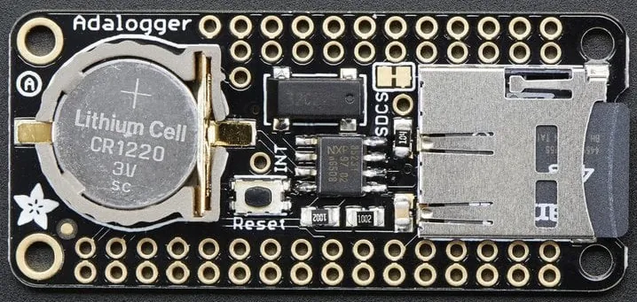
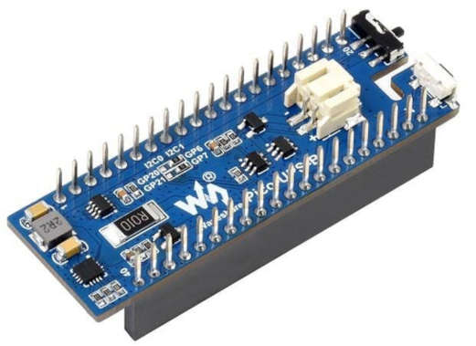
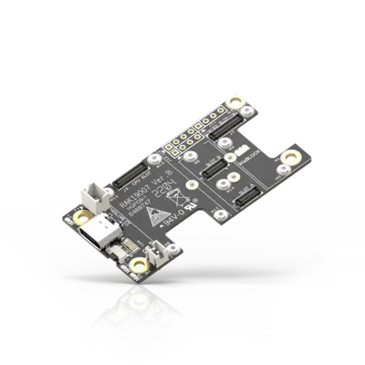
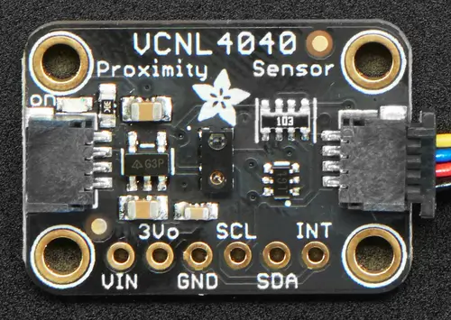
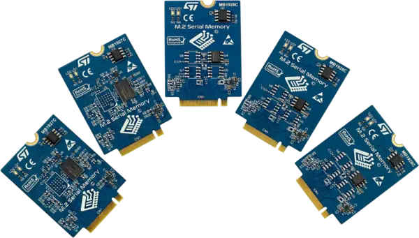

扩展板（shield）
扩展板，也称“附加板”或“子板”，可连接到开发板上，扩展其特性和服务，使原型开发更简单、更模块化。在 Zephyr 中，扩展板功能提供了 Zephyr 格式的扩展板描述，使其更容易与应用程序兼容。
启用扩展板
在 west 命令中添加对应的 --shield 参数，即可启用对一个或多个扩展板的支持：
west build -b your_board --shield x_nucleo_idb05a1 --shield x_nucleo_iks01a1 your_app
也可以在项目的 CMakeLists.txt 中默认设置：
set(SHIELD x_nucleo_iks01a1)
扩展板接口
扩展板由两个关键特征定义：
物理连接器：机械接口
电气信号：每个引脚的实际功能
扩展板与开发板之间的连接通过设备树文件实现：
开发板端：开发板的设备树文件使用 GPIO nexus 节点 将连接器引脚映射到微控制器实际的 GPIO 引脚上。它还为通过连接器引出的总线定义标签（例如
arduino_i2c、arduino_spi、arduino_uart）。扩展板端：扩展板的 .overlay 文件引用这些相同的标签，以描述其元件如何连接到开发板。
在构建时，开发板的设备树与扩展板的覆盖文件会合并在一起，形成完整的硬件配置描述。
例如，假设你有一块带 Arduino 连接器但没有内置加速度计的开发板。你可以使用一块 Arduino 扩展板来添加加速度计：
开发板的设备树定义了
arduino_i2c标签：它就是 Arduino 连接器上引出的 I2C 总线加速度计扩展板的覆盖文件同样引用
arduino_i2c，表示它使用同一条 I2C 总线。如果它需要使用连接器上的 GPIO 引脚，则引用开发板设备树中定义的 GPIO nexus 节点（例如arduino_header）。
此后，为这块开发板加上这块扩展板进行构建时，Zephyr 会自动把它们“连接”起来。
备注
某些开发板和扩展板可能只支持扩展板硬件接口的部分特性。详情请参阅它们的文档。
Arduino MKR
这是 Arduino MKR 系列开发板的外形规格。

相关的设备树节点标签：
arduino_mkr_header有关 GPIO 引脚定义以及可在设备树文件中使用的包含文件的详细信息，请参阅arduino-mkr-header。arduino_mkr_i2carduino_mkr_spiarduino_mkr_serial
Arduino Nano
这是 Arduino Nano 系列开发板的外形规格。

相关的设备树节点标签：
arduino_nano_header有关 GPIO 引脚定义以及可在设备树文件中使用的包含文件的详细信息，请参阅arduino-nano-header。arduino_nano_i2carduino_nano_spiarduino_nano_serial
Arduino Uno R3
这是 Arduino Uno R3 开发板的外形规格。

相关的设备树节点标签：
arduino_header有关 GPIO 引脚定义以及可在设备树文件中使用的包含文件的详细信息，请参阅arduino-header-r3。arduino_adc见arduino,uno-adcarduino_pwm见arduino-header-pwmarduino_serialarduino_i2carduino_spi
技术细节请参阅 Arduino Uno R3 pinout。
摄像头和显示屏连接器
这些描述的是与摄像头和显示屏的连接（严格来说并不属于扩展板）。
arducam,dvp-20pin-connectornxp,cam-44pins-connectornxp,parallel-lcd-connectorraspberrypi,csi-connectorst,dsi-lcd-qsh-030-connectorst,dvp-cam-zif-30-connectorweact,dcmi-camera-connector
ESP-01
这是用于 ESP-01 Wi-Fi 模块的 8 针排针接口。
相关的设备树节点标签：
esp_01_header有关 GPIO 引脚定义以及可在设备树文件中使用的包含文件的详细信息，请参阅esp-01-header。esp_01_serial
Feather
这是 Adafruit Feather 系列开发板的外形规格。专为 Feather 开发板设计的扩展板称为 Featherwing。


相关的设备树节点标签：
feather_headerGPIO 引脚定义请参阅adafruit-feather-header。feather_adcfeather_i2cfeather_serialfeather_spi
Microbit
这是 Microbit 开发板的边缘连接器。

GPIO 引脚定义及技术要求的链接请参阅 microbit,edge-connector。
mikroBUS™
这是由 Mikroe 制定的附加板接口标准。

相关的设备树节点标签：
mikrobus_headerGPIO 引脚定义及技术规范的链接请参阅mikro-bus。mikrobus_adcmikrobus_i2cmikrobus_pwmmikrobus_spimikrobus_serial
注意，具有多个 mikroBUS™ 连接器的开发板可能会定义诸如 mikrobus_2_spi 之类的标签。
Pico
这是 Raspberry Pi Pico 系列开发板的外形规格。


相关的设备树节点标签：
pico_headerGPIO 引脚定义请参阅raspberrypi,pico-header。pico_i2c一个节点标签，与节点标签pico_i2c0或pico_i2c1之一指向同一节点。它引用应优先使用或默认使用的那个节点。pico_i2c0pico_i2c1pico_serialpico_spi
ST Morpho
ST Microelectronics 的开发板通常使用 ST Morpho 扩展板接口。

相关的设备树节点标签：
st_morpho_header有关 GPIO 引脚定义以及可在设备树文件中使用的包含文件的详细信息，请参阅st-morpho-header。st_morpho_lcd_spist_morpho_flash_spi
ST Zio
ST Microelectronics 的 STM32 Nucleo-144 开发板提供 ST Zio 连接器，它是 Arduino Uno V3 连接器的扩展，通过四个排针（CN7、CN8、CN9 和 CN10）引出更多 STM32 I/O。
相关的设备树节点标签：
st_zio_header有关 GPIO 引脚定义以及可在设备树文件中使用的包含文件的详细信息，请参阅st-zio-header。
STMod+
这是部分 STMicroelectronics Discovery 和评估板上的 20 针扩展连接器。
相关的设备树节点标签：
stmod_plus_connector有关 GPIO 引脚定义以及可在设备树文件中使用的包含文件的详细信息，请参阅st,stmod-plus-connector。stmod_adcstmod_i2cstmod_pwmstmod_serialstmod_spi
当某个外设连接到 STMod+ 连接器并在开发板设备树中启用时，开发板可能会提供额外的接口标签。
WisBlock
这是由 RAKwireless 制定的模块化附加板接口标准。它定义了核心（Core）、传感器（Sensor）、I/O 和电源（Power）插槽，每种插槽都通过 24 针或 40 针 WisConnector 接受相应类别的模块。


相关的设备树节点标签：
wisblock_ioGPIO 引脚定义请参阅wisblock-io-slot。wisblock_sensor_aGPIO 引脚定义请参阅wisblock-sensor-slot。wisblock_adcwisblock_pwmwisblock_i2c1wisblock_i2c2wisblock_i2swisblock_pdmwisblock_spiwisblock_uart0wisblock_uart1
注意，传感器插槽按其所实现的插槽依次标记为 wisblock_sensor_a 到 wisblock_sensor_f。
Xiao
这是 Seeeduino XIAO 系列开发板的外形规格。

相关的设备树节点标签：
xiao_dGPIO 引脚定义请参阅seeed,xiao-gpio。xiao_spixiao_i2cxiao_serialxiao_adcxiao_dac
zephyr_i2c / Stemma QT / Quiic
这些是四针 I2C 连接器。SparkFun 称之为“Qwiic”，Adafruit 称之为“Stemma QT”。这种 I2C 连接器有四个引脚：GND、+3.3 V、I2C 数据和 I2C 时钟。最常见的物理连接器是 1.0 mm 间距的 JST-SH。
由于品牌名称各不相同，该接口被标记为“zephyr_i2c”。


相关说明及更多详细信息的链接请参阅 stemma-qt-connector 和 grove-header。
相关的设备树节点标签：
zephyr_i2c
ST M.2 串行存储器连接器
部分 STMicroelectronics Nucleo-144 开发板提供一个 ST 专有的 M.2 串行存储器连接器，用于通过 XSPI 连接外部串行存储器，同时还引出 I2C 和连接器 GPIO 等辅助信号。


相关的设备树节点标签：
m2mem_connector有关 GPIO 引脚定义以及可在设备树文件中使用的包含文件的详细信息，请参阅st,m2-memory-connector。m2mem_i2cm2mem_xspi
扩展板移植与配置
扩展板配置文件位于开发板目录下的 boards/shields 中：
boards/shields/<shield>
├── shield.yml
├── <shield>.overlay
├── Kconfig.shield
├── Kconfig.defconfig
└── pre_dt_shield.cmake
这些文件按如下方式提供扩展板配置：
shield.yml：此文件以 YAML 格式提供扩展板的元数据。它必须包含以下字段：
name：在 Kconfig 和构建系统中使用的扩展板名称（必需）full_name：扩展板的完整商品名称（必需）vendor：扩展板的制造商/厂商（必需）supported_features：扩展板支持的硬件特性列表（可选）。为了帮助用户无需深入查看覆盖文件就能了解扩展板支持哪些特性，可以使用supported_features字段列出扩展板支持的特性类型。取值应与 dts/bindings/binding-types.txt 文件中定义的值相同。
示例：
name: foo_shield full_name: Foo Shield for Arduino vendor: acme supported_features: - display - input
<shield>.overlay：此文件以设备树格式提供扩展板描述，在编译前与开发板的 设备树 合并。
Kconfig.shield：此文件定义用于扩展板默认配置的 Kconfig 符号。为了便于在应用程序中使用，这里的扩展板默认配置应与 编写设备树 保持一致。
Kconfig.defconfig：此文件定义扩展板的默认配置。它应与 编写设备树 保持一致。因此，进行扩展板配置时应牢记：启用哪些特性是应用程序的职责。
pre_dt_shield.cmake：此可选文件可用于向设备树编译器
dtc传递额外的参数。
此外，为了避免与开发板层面可能定义的设备发生名称冲突，建议（特别是在扩展板的设备树描述中）以 <device>_<shield> 的形式提供设备节点标签，例如：
sdhc_myshield: sdhc@1 {
reg = <1>;
...
};
添加源代码
可以为扩展板添加源代码，以满足扩展板特有的配置要求（例如初始化例程、时序约束等），使其能够与 Zephyr 的各个组件正常配合工作。
备注
扩展板中的源代码不得用于上述以外的目的。可在多个扩展板（和/或目标）之间复用的通用功能不应放在这里。
要正确加入源代码：添加一个 CMakeLists.txt 文件以及相应的源文件（在 CMake 中的引用方式与 Zephyr 其他部分类似，例如开发板）。
开发板兼容性
扩展板与开发板之间的硬件兼容性依赖于常用开发板上广为人知的连接器（例如 Arduino 和 96boards）。为了实现软件兼容，开发板还必须提供与其所支持连接器相匹配的配置。
这需要在两个层面完成：
引脚复用（Pinmux）：应正确配置连接器引脚，使其与扩展板引脚相匹配
设备树：开发板的 设备树 文件
BOARD.dts应为每个连接器接口定义一个备用节点标签。例如，对于 Arduino I2C：
arduino_i2c: &i2c1 {};
开发板特定的扩展板配置
如果需要修改扩展板以适配特定的开发板或开发板版本，可以向扩展板添加针对开发板或开发板版本的覆盖文件，为特定开发板重写扩展板描述，如下所示：
boards/shields/<shield>
└── boards
├── <board>_<revision>.overlay
├── <board>.overlay
├── <board>.defconfig
├── <board>_<revision>.conf
└── <board>.conf
扩展板变体
某些扩展板可能有多个变体或版本。这种情况下，可以提供多个版本的扩展板描述：
boards/shields/<shield>
├── <shield_v1>.overlay
├── <shield_v1>.defconfig
├── <shield_v2>.overlay
└── <shield_v2>.defconfig
此时可以使用特定于扩展板版本的名称：
west build -b None --shield shield_v2 your_app
还可以为特定的扩展板版本提供开发板特定的配置：
boards/shields/<shield>
├── <shield_v1>.overlay
├── <shield_v1>.defconfig
├── <shield_v2>.overlay
├── <shield_v2>.defconfig
└── boards
└── <shield_v2>
├── <board>.overlay
└── <board>.defconfig
GPIO nexus 节点
扩展板外设访问的 GPIO 必须使用扩展板的 GPIO 抽象来标识，例如来自 arduino-header-r3 兼容属性的抽象。提供该排针接口的开发板必须将接口引脚映射到 SoC 特定的引脚。这可以通过在开发板设备树文件中加入如下所示的 nexus node 来实现：
arduino_header: connector {
compatible = "arduino-header-r3";
#gpio-cells = <2>;
gpio-map-mask = <0xffffffff 0xffffffc0>;
gpio-map-pass-thru = <0 0x3f>;
gpio-map = <0 0 &gpioa 0 0>, /* A0 */
<1 0 &gpioa 1 0>, /* A1 */
<2 0 &gpioa 4 0>, /* A2 */
<3 0 &gpiob 0 0>, /* A3 */
<4 0 &gpioc 1 0>, /* A4 */
<5 0 &gpioc 0 0>, /* A5 */
<6 0 &gpioa 3 0>, /* D0 */
<7 0 &gpioa 2 0>, /* D1 */
<8 0 &gpioa 10 0>, /* D2 */
<9 0 &gpiob 3 0>, /* D3 */
<10 0 &gpiob 5 0>, /* D4 */
<11 0 &gpiob 4 0>, /* D5 */
<12 0 &gpiob 10 0>, /* D6 */
<13 0 &gpioa 8 0>, /* D7 */
<14 0 &gpioa 9 0>, /* D8 */
<15 0 &gpioc 7 0>, /* D9 */
<16 0 &gpiob 6 0>, /* D10 */
<17 0 &gpioa 7 0>, /* D11 */
<18 0 &gpioa 6 0>, /* D12 */
<19 0 &gpioa 5 0>, /* D13 */
<20 0 &gpiob 9 0>, /* D14 */
<21 0 &gpiob 8 0>; /* D15 */
};
这指定了如何将 <&arduino_header 11 0> 这样的 Arduino 引脚引用转换为 <&gpiob 4 0> 这样的 SoC GPIO 引脚引用。
在 Zephyr 中，GPIO 说明符（specifier）通常有两个参数（由 #gpio-cells = <2> 表示）：引脚编号和一组标志。标志的低 6 位对应可在设备树中配置的特性。某些情况下需要使用非零的标志值来告诉驱动某个引脚的行为方式，例如：
drdy-gpios = <&arduino_header 11 GPIO_ACTIVE_LOW>;
预处理之后，这会变成 <&arduino_header 11 1>。通常，存在这样的标志会导致映射查找失败，因为没有标志值非零的映射条目。gpio-map-mask 属性指定在查找时，使用引脚的所有位以及标志中除低 6 位以外的所有位来识别说明符。然后，gpio-map-pass-thru 指定将标志的低 6 位复制过去，于是 SoC GPIO 引用如预期那样变为 <&gpiob 4 1>。
有关此功能的更多信息，请参阅 nexus node。